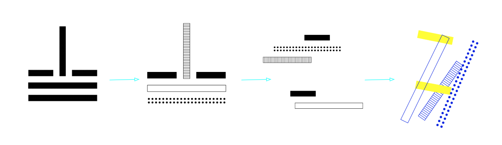
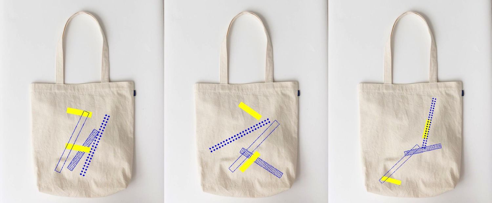
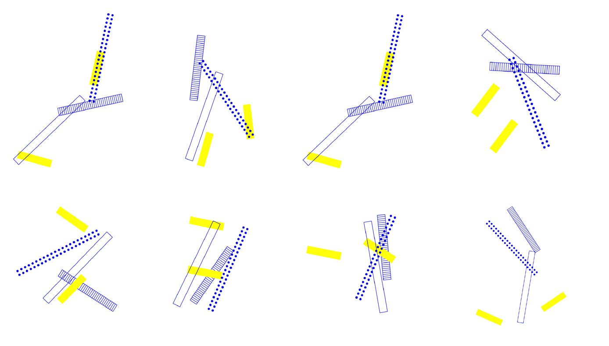

Project Name // PSA Dynamic Logotype
Toolkit // P5.JS
Location // Interactive Media Arts, New York University Shanghai
Instructor // Rune Madsen
Project Description
Generative identities logo for Power Station of Arts, created with P5.JS.
Power station of Arts(PSA) is the first state-run museum dedicated to contemporary art in mainland China. It is also home to the Shanghai Biennale.
process:
tote bags:
Why code?
Personalized logo for each visitor.
Inspired by the original logo created by Chinese designer Shen Haopeng, which reflect the huge electrical power factory that PSA located in, I give each components different patterns and colors and let them rotate based on certain rules. Every logo is a different shape while keeping the same design consistency. The new dynamic logo can be used in various environment - tote bags, ticket, etc. Visitors can pick the one they like to consume thus creating a personal experience and unique bond with the art museum.
open my code here
